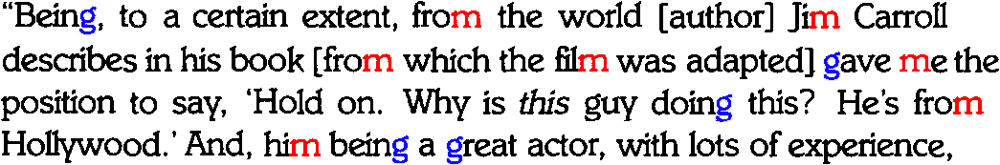

Tweet
Tweet
Autolearning is a first element that validates the “raw” results of the pretrained neural network. “Autolearning” means that the neural system learns font shapes automatically, that without feedback from the user. (Autolearning is not the same as interactive learning or “font training”!)
How can the neural network in use mode — specialists speak of “on-line training” — learn things by itself? By studying all occurrences of a specific font shape! Let’s give a small example. A degraded character shape could be a “c” or an “e”. The system has, say, a 75% certainty that the first shape is a “c” and a 60% certainty that the shape is an “e”. The second shape is an “e” with a confidence of 80%. But these characters occur in the word “heaven”. It makes sense to see the degraded shape as an “e”, not as the theoretically more probable “c”. However, if we were talking about a proper name, that argument would be void: we could be dealing with “Bracken” and “Braeken”…
And we have to look at the other instances on the page where the same bitmaps — or sufficiently similar ones — occur: do they indicate an “e” or a “c” there? If a font shape in one place means one thing, what does it mean elsewhere on the page? This philosophy explains how the OCR software adapts itself to the typeface(s) used in your document. It’s as if the software gets accustomed to your document, “autolearns” to read the particular fonts submitted to the OCR engine.

Where does this technology come from? — Reaping the benefits of the neural revolution — … Or do word recognition — Each expert casts his vote — Autolearning font shapes — Putting more feet on the street — … With a document revolution thrown in
Home page — Intro — Scanners — Images — History — OCR — Languages — Accuracy — Output — BCR — Pen scanners — Sitemap — Search — Contact – Feedback